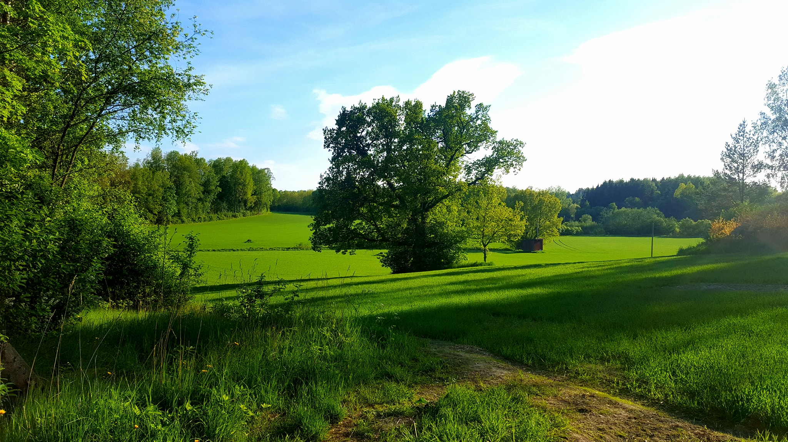
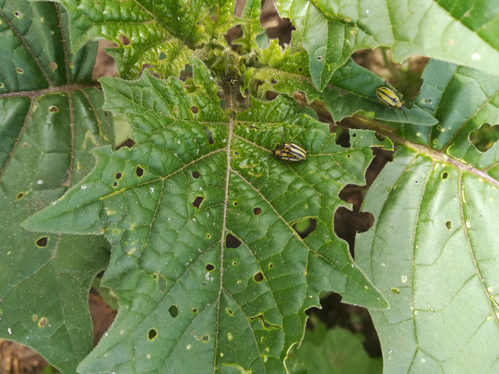
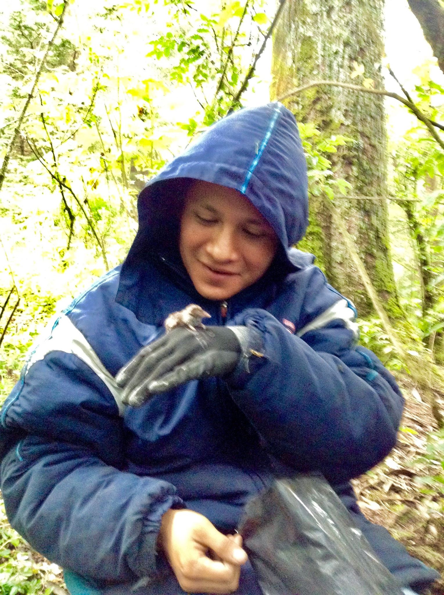
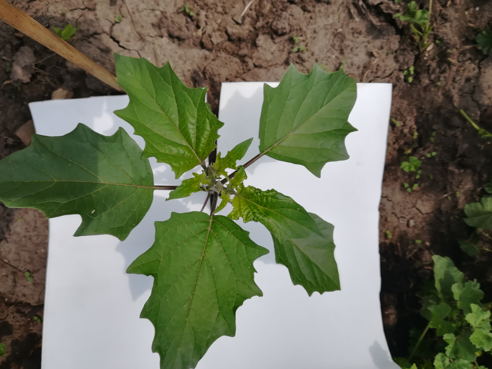

Welcome to my personal website, I am an evolutionary biologist fascinated for plants! here you will find a little bit about my research

Datura stramonium and Lema daturaphila

Some fieldwork

Datura stramonium